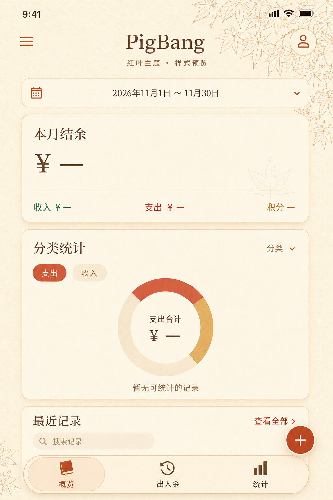
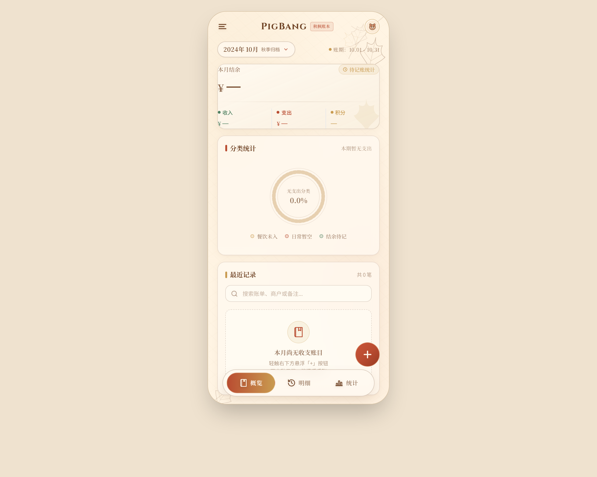

Image 2 · 背景与配色高画质稿
和纸纹理、枫红按钮、铜金边线、枫叶线稿。整页视觉参考，不是App运行时背景图片。

两版独立参考，尚未接入App。Image 2：quality=high；Stitch：文字简报生成，未直接读取本地API图。
和纸纹理、枫红按钮、铜金边线、枫叶线稿。整页视觉参考，不是App运行时背景图片。

定制书本/时钟/三柱图标、渐变选中态、呼吸光。存在偏差：日期为2024年10月；加入示例分类文案；水印叶形与叶丛不符合已确认参考。需修正后才能接入。
打开原始HTML查看动效（需联网加载样式） · Stitch项目

Stitch返回建议：查看记账弹窗、探索明细时间轴、查看夜枫暗色模式。本轮未继续生成这些扩展。